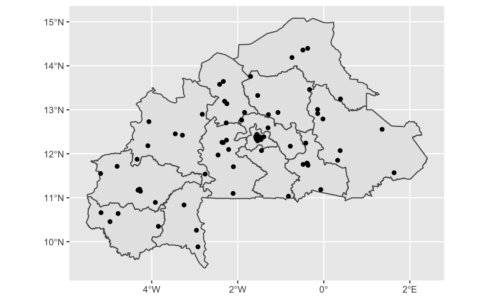
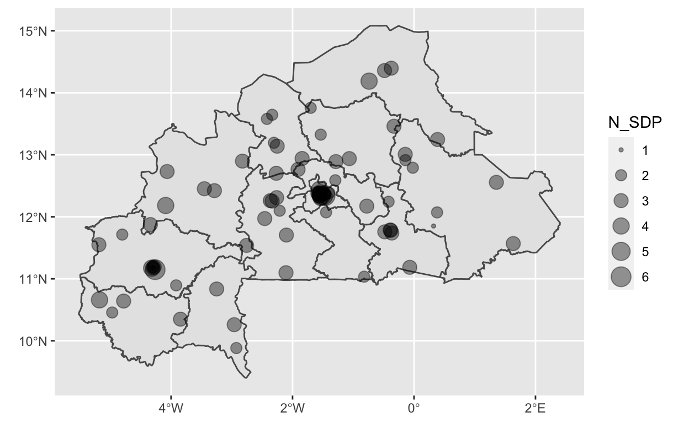
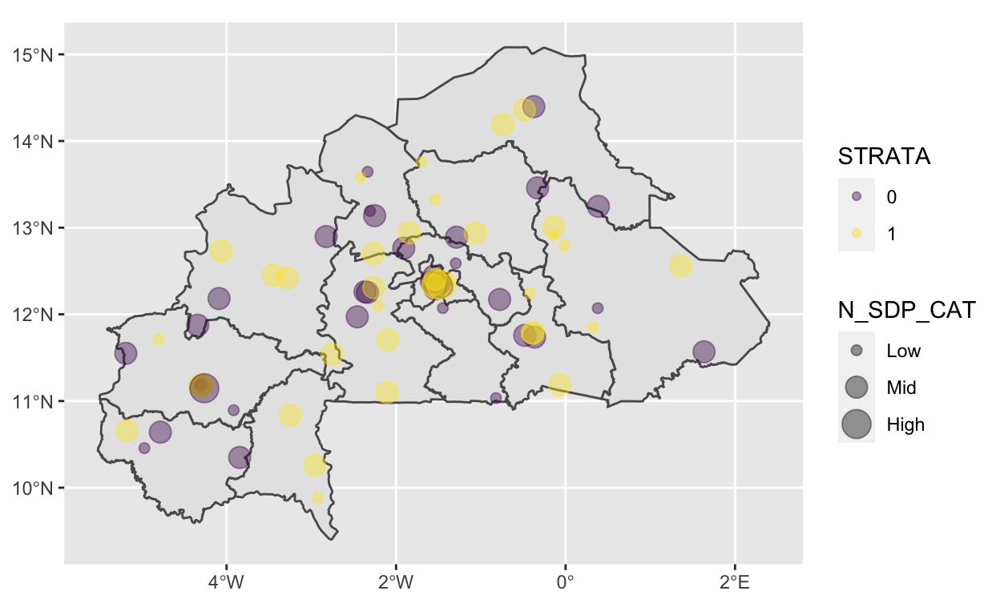
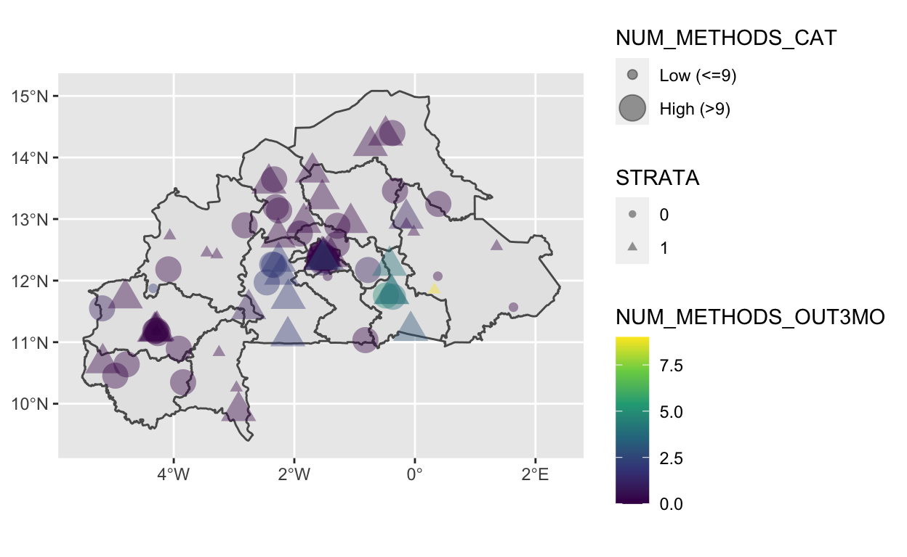
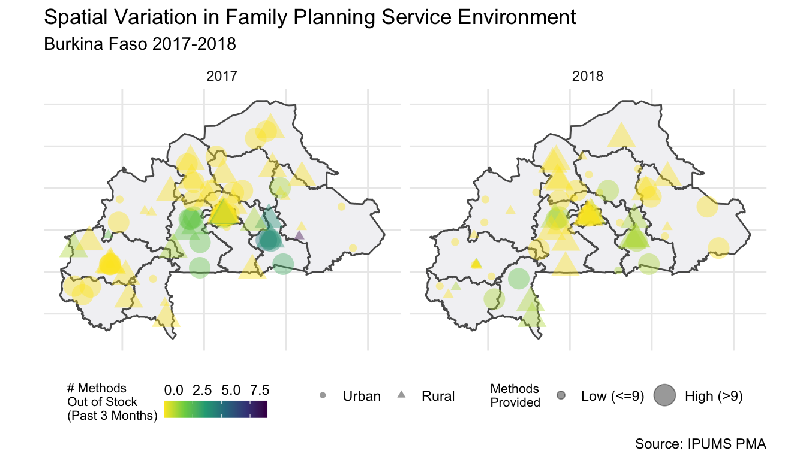

In our last post, we showed how PMA Service Delivery Point (SDP) data can be aggregated to the enumeration area they serve (captured by EASERVED) and linked to the individual-level PMA survey data. In this post, we’ll show how the SDP data can be linked to the PMA GPS datasets. Then, we’ll map different variables to show how variation in variables can be understood spatially.
Data
We’ll be working with the final sdp dataset created in the previous post. You can either check out that post here or just load the sdp dataset from the “data” folder for this post in the PMA Data Hub repository on GitHub (add link). We’ll focus on a few of the EASEARVED-level variables created in the last post:
NUM_METHODS_PROV- number of methods provided by at least one SDPNUM_METHODS_OUT- number of methods out of stock with at least one SDPNUM_METHODS_INSTOCK- number of methods in-stock with at least one SDPNUM_METHODS_OUT3MO- number of methods out of stock any time in the last 3 months with at least one SDPMEAN_OUTDAY- the mean length of a stockout for any family planning method (measured in days)N_SDP- number of SDPs
We’ll also use the STRATA variable, which identifies whether an EA is in an urban or rural area.
We’ll also be working with the PMA GPS datasets for Burkina Faso. The GPS data include one GPS coordinate per enumeration area. The Burkina Faso Round 5 and 6 surveys sampled the same enumeration areas, which means we can link the GPS data to both rounds (either mention here or in the aside later on).
The last dataset we’ll use in this post are the administrative boundaries for Burkina Faso. Shapefiles with administrative boundaries are widely available for download, but we’ll use the R package GADMTools, which allows you to download shapefiles directly in R.
Setup
Make sure you have all of the following packages installed. Once installed, load the packages we’ll be using today:
Load the SDP data and the GPS data from the data folder and check out what the GPS data contains:
load("data/sdp.Rdata")
gps <- read_csv("data/PMA_BF_GPS_v1_24Jul2018.csv")
gps
# A tibble: 83 x 7
PMACC PMAYEAR REGION EA_ID GPSLONG GPSLAT DATUM
<chr> <dbl> <chr> <dbl> <dbl> <dbl> <chr>
1 BF 2017 5. centre-nord 7610 -1.07 12.9 WGS84
2 BF 2017 1. boucle-du-mouhoun 7820 -4.07 12.7 WGS84
3 BF 2017 3. centre 7271 -1.58 12.4 WGS84
4 BF 2017 3. centre 7799 -1.54 12.4 WGS84
5 BF 2017 8. est 7243 0.380 12.1 WGS84
6 BF 2017 6. centre-ouest 7026 -2.37 12.3 WGS84
7 BF 2017 3. centre 7859 -1.57 12.3 WGS84
8 BF 2017 3. centre 7725 -1.55 12.3 WGS84
9 BF 2017 6. centre-ouest 7390 -2.21 12.1 WGS84
10 BF 2017 11. plateau-central 7104 -1.91 12.8 WGS84
# … with 73 more rowsThe gps data has 7 variables:
- PMACC: the 3-letter country code (ask Devon about this - they seem to be 2-letters?)
- PMAYEAR: the 4-digit year of data collection
- REGION: sub-national administrative division name
- EA_ID: the enumeration area ID (and how we’ll merge this data into other PMA datasets)
- GPSLAT: the displaced EA’s centroid latitude coordinate in decimal degrees
- GPSLONG: the displaced EA’s centroid longitude coordinate in decimal degrees
- DATUM: the coordinate reference system and geographic datum. This variable is always “WGS84” for the World Geodetic System 1984.
Note that the GPSLAT and GPSLONG are displaced coordinates of the EA centroid. This is because PMA randomly displaces the geographic coordinates to preserve the privacy of survey respondents. Coordinates are displaced randomly by both angle and distance. Urban EAs are displaced from their true location up to 2 km. Rural EAs are displaced from their true location up to 5 km. Additionally, a random sample of 1% of rural EAs are displaced up to 10km. The PMA GPS data come with documentation that explains the displacement in more detail. The primary spatial package we’ll use is simple features or sf. We’ll use sf::st_as_sf() to convert the GPS data to a spatial data object (known as a simple feature collection).
gps <- gps %>%
st_as_sf(
coords = c("GPSLONG", "GPSLAT"),
crs = 4326) # 4326 is the coordinate reference system (CRS) identifier for WGS84
gps
Simple feature collection with 83 features and 5 fields
geometry type: POINT
dimension: XY
bbox: xmin: -5.18865 ymin: 9.883331 xmax: 1.634087 ymax: 14.39679
geographic CRS: WGS 84
# A tibble: 83 x 6
PMACC PMAYEAR REGION EA_ID DATUM geometry
* <chr> <dbl> <chr> <dbl> <chr> <POINT [°]>
1 BF 2017 5. centre-nord 7610 WGS84 (-1.065238 12.93839)
2 BF 2017 1. boucle-du-mouhoun 7820 WGS84 (-4.065366 12.72985)
3 BF 2017 3. centre 7271 WGS84 (-1.583361 12.37884)
4 BF 2017 3. centre 7799 WGS84 (-1.540024 12.40452)
5 BF 2017 8. est 7243 WGS84 (0.3797186 12.07097)
6 BF 2017 6. centre-ouest 7026 WGS84 (-2.366313 12.26087)
7 BF 2017 3. centre 7859 WGS84 (-1.570808 12.33761)
8 BF 2017 3. centre 7725 WGS84 (-1.552744 12.33411)
9 BF 2017 6. centre-ouest 7390 WGS84 (-2.211783 12.09784)
10 BF 2017 11. plateau-central 7104 WGS84 (-1.909244 12.76427)
# … with 73 more rowsNow that gps is a simple features object, we’ve lost the GPSLAT and GPSLONG variables and gained a variable called geometry, which contains the spatial information for this data.
The last thing we need is the Burkina Faso shapefile. GADMTools will allow us to download and load shapefiles directly from R. Conveniently, GADMTools::gadm_sf_loadCountries() will load the shapefile as an sf object. The bf_1 object is a list which contains some metadata in addition to the shapefile, but we don’t need anyt of it right now, so we’ll only take the sf object. Note that here the geometry variable is a POLYGON, whereas in the gps data it is a POINT.
bf_1 <- gadm_sf_loadCountries(
fileNames = "BFA", # the ISO-3166-1 country code
basefile = "data/", # the directory where the shapefile will be saved
level = 1) # indicates that we want administrative level 1
bf_1 <- bf_1$sf
# if you don't have GADMTools installed, uncomment the code below to load the shapefile
# bf_1 <- readRDS("data/BFA_adm1.sf.rds")
bf_1
Simple feature collection with 13 features and 5 fields
geometry type: POLYGON
dimension: XY
bbox: xmin: -5.518918 ymin: 9.401108 xmax: 2.4054 ymax: 15.08259
geographic CRS: WGS 84
First 10 features:
ISO NAME_0 NAME_1 TYPE_1 ENGTYPE_1
1 BFA Burkina Faso Boucle du Mouhoun Région Region
6 BFA Burkina Faso Cascades Région Region
11 BFA Burkina Faso Centre Région Region
7 BFA Burkina Faso Centre-Est Région Region
8 BFA Burkina Faso Centre-Nord Région Region
9 BFA Burkina Faso Centre-Ouest Région Region
10 BFA Burkina Faso Centre-Sud Région Region
12 BFA Burkina Faso Est Région Region
13 BFA Burkina Faso Haut-Bassins Région Region
2 BFA Burkina Faso Nord Région Region
geometry
1 POLYGON ((-4.48801 11.79912...
6 POLYGON ((-4.16146 9.801042...
11 POLYGON ((-1.72342 12.09224...
7 POLYGON ((-0.4919499 11.014...
8 POLYGON ((-0.6313 12.54146,...
9 POLYGON ((-1.88221 10.98227...
10 POLYGON ((-0.9030276 10.971...
12 POLYGON ((0.7639515 10.9973...
13 POLYGON ((-5.08715 10.82588...
2 POLYGON ((-2.3256 12.65788,...Merge and Map
Now that we have all our data, we’ll show you how to map variables… But before we do that, let’s do some basic, exploratory mapping.
Basic Maps
ggplot2 has support for sf objects, which makes it really easy to map things using the ggplot2::geom_sf(). geom_sf() will automatically identify what kind of spatial data you’re plotting and handle it appropriately. For example, let’s plot the gps data (which are points) and the administrative region (which are polygons).
# Plot EA centroids
ggplot() +
geom_sf(data = gps)
# Plot regions of Burkina Faso
ggplot() +
geom_sf(data = bf_1)

The building-block approach of ggplot2 (“Grammar of Graphics”) also makes it really easy to layer different spatial features on the same map.
# Plot regions of Burkina Faso & EA centroids on the same map
ggplot() +
geom_sf(data = bf_1) +
geom_sf(data = gps)

Merge GPS and SDP Data
To map the EA-level variables constructed in the last post, we need to merge the sdp data and the gps data by EA_ID. First, let’s rename the EASEARVED variable to match the GPS data and then use a dplyr::right_join to merge in the SDP data. We need to use a right_join() because the sf object must be listed first in our join command to retain the sf class, but we want to ensure that all rows from sdp are preserved.
# rename to be consistent with GPS data
sdp <- sdp %>%
rename(
EA_ID = EASERVED
)
sdp <- right_join(gps, sdp, by = "EA_ID")
sdp # now the sdp data is an sf object
Simple feature collection with 149 features and 20 fields
geometry type: POINT
dimension: XY
bbox: xmin: -5.18865 ymin: 9.883331 xmax: 1.634087 ymax: 14.39679
geographic CRS: WGS 84
# A tibble: 149 x 21
PMACC PMAYEAR REGION EA_ID DATUM geometry YEAR
<chr> <dbl> <chr> <dbl> <chr> <POINT [°]> <int>
1 BF 2017 5. ce… 7610 WGS84 (-1.065238 12.93839) 2017
2 BF 2017 5. ce… 7610 WGS84 (-1.065238 12.93839) 2018
3 BF 2017 1. bo… 7820 WGS84 (-4.065366 12.72985) 2017
4 BF 2017 1. bo… 7820 WGS84 (-4.065366 12.72985) 2018
5 BF 2017 3. ce… 7271 WGS84 (-1.583361 12.37884) 2017
6 BF 2017 3. ce… 7799 WGS84 (-1.540024 12.40452) 2017
7 BF 2017 8. est 7243 WGS84 (0.3797186 12.07097) 2017
8 BF 2017 8. est 7243 WGS84 (0.3797186 12.07097) 2018
9 BF 2017 6. ce… 7026 WGS84 (-2.366313 12.26087) 2017
10 BF 2017 6. ce… 7026 WGS84 (-2.366313 12.26087) 2018
# … with 139 more rows, and 14 more variables: N_SDP <int>,
# N_SDP_INT <int>, HOSPITAL <int>, HCENTER <int>, PHARM <int>, …Map SDP data
Remember, the sdp data contains information from 2017 & 2018 for the same EA, which can clog up the map depending on how we use this information. To start out, let’s use only the 2017 data and add information about the number of service delivery providers that serve a given EA (N_SDP). By passing N_SDP to the size aesthetic, we can more easily visualize how EAs vary in their access to service delivery providers.
sdp2017 <- sdp %>%
filter(YEAR == 2017)
ggplot() +
geom_sf(data = bf_1) +
geom_sf(data = sdp2017,
aes(size = N_SDP),
alpha = 0.4)

From the map, it looks like there may be a few locations where there EAs are both close together and served by many SDPs, which are likely in urban areas. For example, the capital of Burkina Faso, Ouagadougou, is in the center of the map where there are a number of EAs on top of each other. But, it’s a little hard to see the variation in size when there are so many values for N_SDP and so many EAs on top of each other. Let’s do two things to make this more readable. First, we’ll create smaller categories of the N_SDP variable, and second, we’ll map the STRATA variable to the color aesthetic.
sdp2017 <- sdp2017 %>%
mutate(
N_SDP_CAT = case_when(
N_SDP <= 2 ~ 1,
N_SDP >2 & N_SDP <= 4 ~ 2,
N_SDP >4 ~ 3),
N_SDP_CAT = factor(N_SDP_CAT,
levels = c(1, 2, 3),
labels = c("Low", "Mid", "High"),
ordered = T), # needs to be an ORDERED factor to map to the size aesthetic
MEAN_OUTDAY = ifelse(is.na(MEAN_OUTDAY), 0, MEAN_OUTDAY)
)
sdp2017 <- sdp2017 %>%
mutate(STRATA = factor(sample(c(0,1), size = nrow(sdp2017), replace = T)))
ggplot() +
geom_sf(data = bf_1) +
geom_sf(data = sdp2017,
aes(size = N_SDP_CAT,
color = STRATA),
alpha = 0.4) +
scale_color_viridis_d() # this gives us some nicer colors than the ggplot defaults (the d is for a discrete variable)

Urban areas are clearly served by more SDPs, which is not really surprising. But, what is the service environment like? Do urban areas have more stock-outs than rural areas? Do SDPs in urban areas offer a greater selection of family planning methods? Did the service environment change between 2017 and 2018? Mapping can shed a lot of light on these questions.
Let’s look at the NUM_METHODS_PROV variable created in the last post. This variable captures the number of family planning methods provided by at least one SDP that serves a given EA.
sdp2017 %>%
tab(NUM_METHODS_PROV) %>%
arrange(NUM_METHODS_PROV)
Simple feature collection with 5 features and 4 fields
geometry type: MULTIPOINT
dimension: XY
bbox: xmin: -5.18865 ymin: 9.883331 xmax: 1.634087 ymax: 14.39679
geographic CRS: WGS 84
# A tibble: 5 x 5
NUM_METHODS_PROV N geometry prop cum_prop
<int> <int> <MULTIPOINT [°]> <dbl> <dbl>
1 8 2 ((-4.299839 11.18039), (-2.96… 0.02 1
2 9 13 ((-4.340111 11.8743), (-4.281… 0.16 0.92
3 10 34 ((-5.18865 11.54962), (-4.969… 0.41 0.41
4 11 29 ((-5.178223 10.66001), (-3.84… 0.35 0.76
5 12 5 ((-2.757122 11.53829), (-2.26… 0.06 0.98Since there is not a large range of number of FP methods provided, let’s dichotomize this so we can map it to the shape aesthetic.
sdp2017 <- sdp2017 %>%
mutate(
NUM_METHODS_CAT = case_when(
NUM_METHODS_PROV <= 9 ~ 1,
NUM_METHODS_PROV >9 ~ 2),
NUM_METHODS_CAT = factor(NUM_METHODS_CAT,
levels = c(1, 2),
labels = c("Low (<=9)", "High (>9)"),
ordered = T)
)
# shape as categorical num methods, color as strata, and size as stockouts works pretty well
# shape as strata, size as num methods, and color as num stockouts also works well
# could try doing an interaction of strata & num methods provided
ggplot() +
geom_sf(data = bf_1) +
geom_sf(data = sdp2017,
aes(size = NUM_METHODS_CAT,
shape = STRATA,
color = NUM_METHODS_OUT3MO),
alpha = 0.4) +
scale_color_viridis_c()

Putting it all together
Now we have a map that shows spatial variation in availability of different methods of family planning and prevalence of stock-outs, as well as demonstrates how these characteristic differ across urban vs. rural EAs. It’s super quick to make a basic map like this, but let’s clean up a few things to make it look nicer.
ggplot() +
geom_sf(data = bf_1, fill = "#f2f2f5") +
geom_sf(data = sdp2017,
aes(size = NUM_METHODS_CAT,
shape = STRATA,
color = NUM_METHODS_OUT3MO),
alpha = 0.4) +
scale_color_viridis_c(direction = -1) + # reversing the direction makes the high #s stand out more
labs(title = "Spatial Variation in Family Planning Service Environment",
subtitle = "Burkina Faso 2017-2018",
caption = "Source: IPUMS PMA",
shape = "",
size = "Methods\nProvided",
color = "Out of Stock\n(Past 3 Months)",
x = NULL,
y = NULL) +
theme_minimal() +
theme(
axis.line = element_blank(),
axis.text.x = element_blank(),
axis.text.y = element_blank(),
axis.ticks = element_blank(),
axis.title.x = element_blank(),
axis.title.y = element_blank())
# if you want to export your map, uncomment the following line of code
# ggsave(filename = "data/bf_fp_map.pdf",
# height = 4.5, width = 7)
This map suggests there is spatial correlation to the stockouts – with 2 regions responsible for the majority of EAs with stockouts. It also looks like these EAs tend to have more methods provided by the SDPs that serve them. Finally, let’s use both years of data and see if there is any temporal variation. To do this, we’ll use the original sdp dataset (instead of sdp2017) and re-create the smae NUM_METHODS_CAT factor variable that dichotomizes the NUM_METHODS_PROV variable. Then, we’ll use facet_wrap() to make a multi-panel plot, with one panel per year.
sdp <- sdp %>%
mutate(
NUM_METHODS_CAT = case_when(
NUM_METHODS_PROV <= 9 ~ 1,
NUM_METHODS_PROV >9 ~ 2),
NUM_METHODS_CAT = factor(NUM_METHODS_CAT,
levels = c(1, 2),
labels = c("Low (<=9)", "High (>9)"),
ordered = T),
STRATA = factor(sample(c(0,1), size = nrow(sdp), replace = T),
levels = c(0,1),
labels = c("Urban", "Rural"))
)
ggplot() +
geom_sf(data = bf_1, fill = "#f2f2f5") +
geom_sf(data = sdp,
aes(size = NUM_METHODS_CAT,
shape = STRATA,
color = NUM_METHODS_OUT3MO),
alpha = 0.4) +
facet_wrap(~ YEAR) +
# reversing the direction makes the high #s stand out more
scale_color_viridis_c(direction = -1) +
guides(color = guide_colorbar(barheight = .75,
barwidth = 4.5,
label.position = "top",
label.hjust = 0)) +
labs(title = "Spatial Variation in Family Planning Service Environment",
subtitle = "Burkina Faso 2017-2018",
caption = "Source: IPUMS PMA",
shape = "",
size = "Methods\nProvided",
color = "# Methods\nOut of Stock\n(Past 3 Months)",
x = NULL,
y = NULL) +
theme_minimal() +
theme(
axis.line = element_blank(),
axis.text.x = element_blank(),
axis.text.y = element_blank(),
axis.ticks = element_blank(),
axis.title.x = element_blank(),
axis.title.y = element_blank(),
legend.title = element_text(size = 8),
legend.position = "bottom")

Adding in the 2018 data demonstrates that the EAs facing more stockouts in 2017 are not the same as those facing stockouts in 2018. But, there is still a spatial pattern to the stockouts in 2018.
Future posts may explore other supply-side factors that could influence the SDPs (and look at how these change over time) or examine demand-side factors, by merging in the individual-level data.
As always, let us know what kinds of questions about fertility and family planning you’re answering – especially if you’re doing anything spatial!